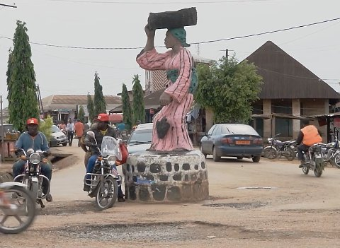

Andréas Lang

Andréas Lang * in Zweibrücken/Pfalz, ehemals
Schlagzeuger der Punkband Nasse Hunde. Zehn Jahre lang
freischaffender Fotograf in Paris, ab da auch Video, Experimental-
und Dokumentarfilm. Zahlreiche Arbeiten über die Spuren des
Kolonialismus in Zentralafrika. Reisen nach Kamerun, Tschad,
Zentralafrikanische Republik und ins Kongo Grenzgebiet. Zahlreiche
Auszeichnungen und Stipendien.
www.lang-photo.com
Ausstellungen (u.a.): Podbielski Contemporary, Berlin 2016 – Deutsches Historisches Museum, Berlin 2016 – Alexander Ochs Private, Berlin 2016 – Rathausgalerie/Kunsthalle München 2017
Rondpoint
Kamerun 2016 – Video, Sound 18'06''
Idee, Kamera: Andréas Lang
Tableau vivant an zwei dörflichen Knotenpunkten in Kamerun, in Akonolinga (Ostkamerun) und Mamfe (Westkamerun) an der nigerianischen Grenze. Das tägliche Leben und der Verkehr umkreist die Statuen auf den Inseln des Kreisverkehrs, während die umliegenden Gebäude Spuren der Kolonialisierung zeigen – im Osten der Briten, im Westen der Franzosen.